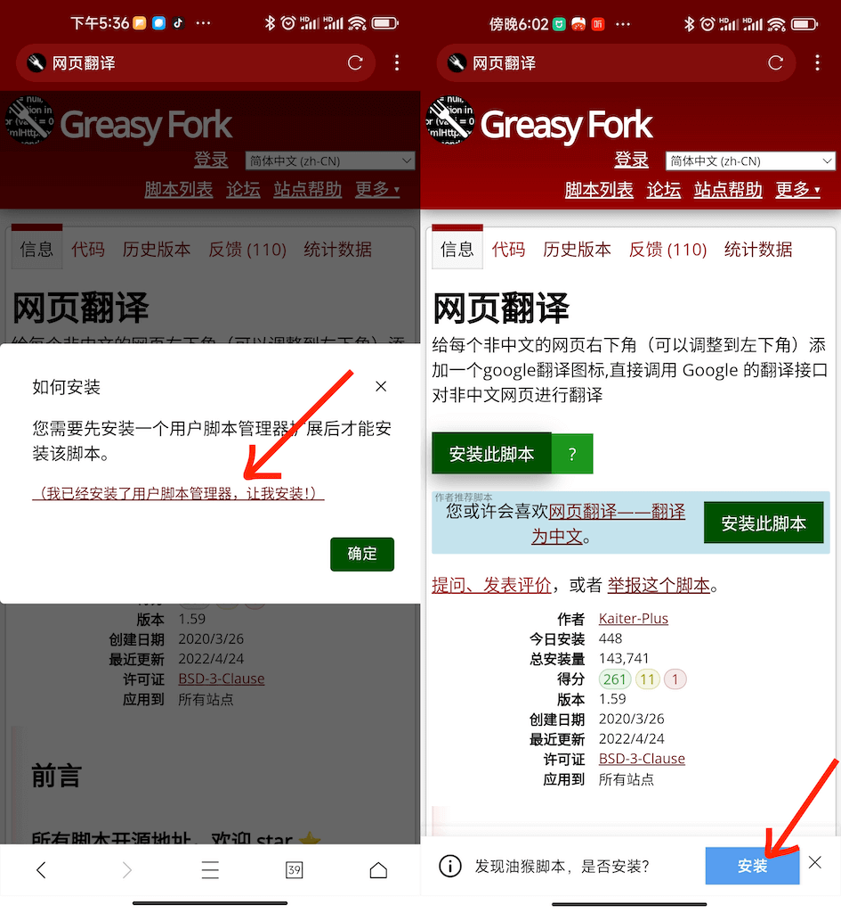

用了 XBrowser 三年才挖到的 5 个隐藏功能——你以为它只是个轻量浏览器？
XBrowser 以 2MB 的小体积出名，但藏在设置深处的油猴原生引擎、阅读模式自动续章、强制页面缩放等功能，让它远不止一个"能打开网页"的浏览器。
我最初装 XBrowser 是冲它那 2MB 的安装包——在官方下载站拿的 APK，在这个 App 动辄几百 MB 的年代，一个浏览器做到这么小，总觉得应该试试。试了之后确实用了好长时间，多标签、广告拦截、阅读模式，这些是日常主力。后来才知道它的官网上列的功能比我想的多太多，但翻设置翻了三年才发现，它藏得真深。
1. 油猴脚本原生跑——地址栏贴 .js 就装
大多数人把 XBrowser 当普通浏览器用，顶多开个广告拦截。但你知道它原生带 TamperMonkey / GreaseMonkey 引擎吗？不是装插件那种"套壳兼容"，是浏览器内核级的支持——GM_xmlhttpRequest、GM_download、GM_cookie 这些高级函数全部可用。
安装脚本的方式也藏得很随意：在油猴脚本网站（比如 GreasyFork）点安装按钮，或者干脆把 .js 结尾的 URL 直接粘进地址栏，浏览器会自动识别弹出安装确认框。支持 @match / @include / @exclude 全套匹配规则。
这个功能对什么人有用？常年泡论坛、贴吧、小说站的——找个去广告脚本、自动翻页脚本、VIP 视频解析脚本，粘个 URL 就装上，不用额外装油猴插件。官方几乎不宣传这个，我也是某次好奇往地址栏随便贴了个链接才撞出来的。想把 GM_* 函数玩透或者写自己的脚本，xbrowser文档里有完整的 API 说明和脚本配置指南。

2. 阅读模式 TTS——读完自动跳下一章
XBrowser 的阅读模式大家应该都在用，自动正文识别、过滤广告、小说自动拼页。但你试过开启 TTS 朗读吗？重点不是朗读本身，是读完一章自动跳到下一章、语音进度高亮跟随页面滚动、TTS 悬浮按钮可拖拽并自动吸附屏幕边缘——这一整套打磨完的阅读体验，在手机浏览器里我没见过别家做这么细的。
藏在哪？打开阅读模式后，底部工具栏或浮动按钮里能找到 TTS 开关。首次使用系统会让你选一个 TTS 引擎（国内手机系统基本自带了，中文朗读没问题）。开启后可以设置：语速、自动播放下一章节、进度高亮。
什么场景真有用？躺着看小说眼睛累的时候，开车坐地铁想听书的时候——你甚至可以把手机放口袋里，听完一章它自己翻下一章。我现在追网文基本都靠这个。
3. 强制页面缩放——绕过网站的 user-scalable=no
很多手机网站为了排版整齐，在 HTML 里加了 <meta name="viewport" content="user-scalable=no">，把双指缩放给禁了。遇到字小的页面（比如某些技术文档、外文网站），你只能凑很近看，特别难受。
XBrowser 有个全局开关直接绕过这个限制：设置 → 浏览器设置 → 高级设置 → 找「强制页面缩放」或「忽略页面缩放限制」，打开就行。从此不管网站自己怎么设置，你都能捏合双指随便缩放。
副作用也有——某些页面缩放后会出现横向滚动条，或者固定定位的弹窗位置跑偏。但这是网页自己没考虑可缩放场景的锅，不是浏览器的问题。建议平时关着，遇到字小的页面再开，或者视力对小字体敏感的人可以一直开。
4. 加密书签——手势密码锁起来
有人会好奇：XBrowser 体积这么小，隐私保护到底靠不靠谱？答案是它从设计上就做了很多别的浏览器没做的事——不绑手机号、不收集数据、不用第三方 SDK、极少量权限申请。但最让我意外的是加密书签和历史记录这个功能。
路径：进入书签或历史记录页面 → 找「加密存储」或「设置解锁手势」→ 画一个解锁手势（类似 Android 锁屏）。之后每次打开书签 / 历史记录，都要画这个手势才能看。而且这个手势只存在本地，不上传任何云端服务器。
什么人用得上？手机经常被别人拿去玩的、有敏感书签不想被看到的、对隐私有重度需求的。如果你只是普通用户，觉得没必要多一道门槛，那可以无视。
5. 全屏游戏模式——禁用长按菜单和手势
这个是 V5.6.0 更新里加的，我也是刷版本日志才注意到。全屏模式大家都知道——隐藏工具栏、浮动按钮可拖拽。但全屏游戏模式在此基础上额外禁用了长按菜单和手势触发，防止玩游戏时不小心长按弹出菜单、或者滑动手势误触浏览器操作。
开法：先切全屏，然后在全屏模式的设置或工具栏里找「游戏模式」开关。开启后全屏 + 禁用长按 + 禁用手势，纯纯给手游预留的。什么人用得上？用 XBrowser 玩网页游戏的——比如 H5 游戏、云游戏页面。普通浏览场景完全用不到。
一个提醒：强制缩放别常开
前面说了，强制页面缩放虽然好用，但某些网站的布局确实扛不住缩放——横向滚动条、悬浮按钮错位、甚至有些 JS 交互会出问题。最稳的做法是默认关着，遇到需要的页面临时开一下，看完就关。
另外广告拦截开了之后记得订阅外部规则——默认只带了最基础的几条规则，拦截效果有限。进设置 → 隐私与安全 → 广告拦截 → 订阅规则，加 EasyChina 或者 AdGuard 基础规则，拦截效果立马提升。
最后说一句
XBrowser 只有 2MB，但功能密度真的比很多几十 MB 的浏览器高——油猴原生、阅读模式 TTS、强制缩放、加密书签、视频嗅探绑第三方下载器、BT/磁力支持、DLNA 投屏……还有很多没提到的小细节。用透了会发现，它不是"轻量浏览器"那么简单，是一个把功能藏在设置深处、等你自己挖的全能型浏览器。
如果你也在找一个既能安静看网页、又能折腾脚本、还能当阅读器用的浏览器，版本更新一直没停过，功能密度还在往上堆。